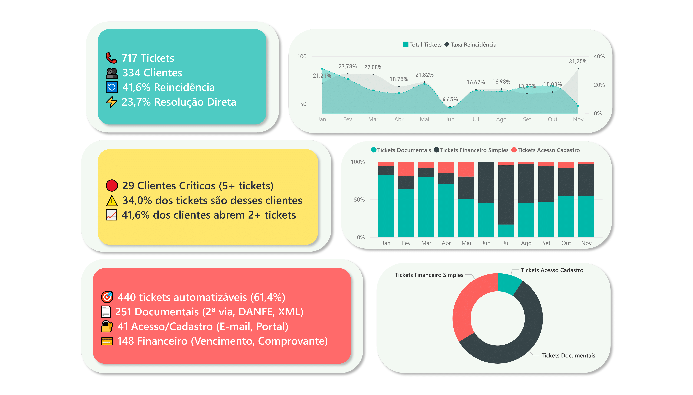

Identificação de oportunidades de automação em processos de atendimento

Dashboard desenvolvido para análise de tickets de atendimento com foco em identificar processos repetitivos e oportunidades de automação operacional.
O projeto analisou 717 tickets classificando solicitações por tipo, complexidade e potencial de automação.
O dataset contém registros operacionais de atendimento com informações de tickets, clientes e categorias de solicitação.
O dataset analisado contém 717 registros, permitindo identificar padrões de atendimento e oportunidades de automação.
Pct_Automatizavel =
DIVIDE([Tickets_Automatizaveis],[Total_Tickets])
Economia_Estimada_Horas =
[Tickets_Automatizaveis] * [Tempo_Medio_Resolucao]